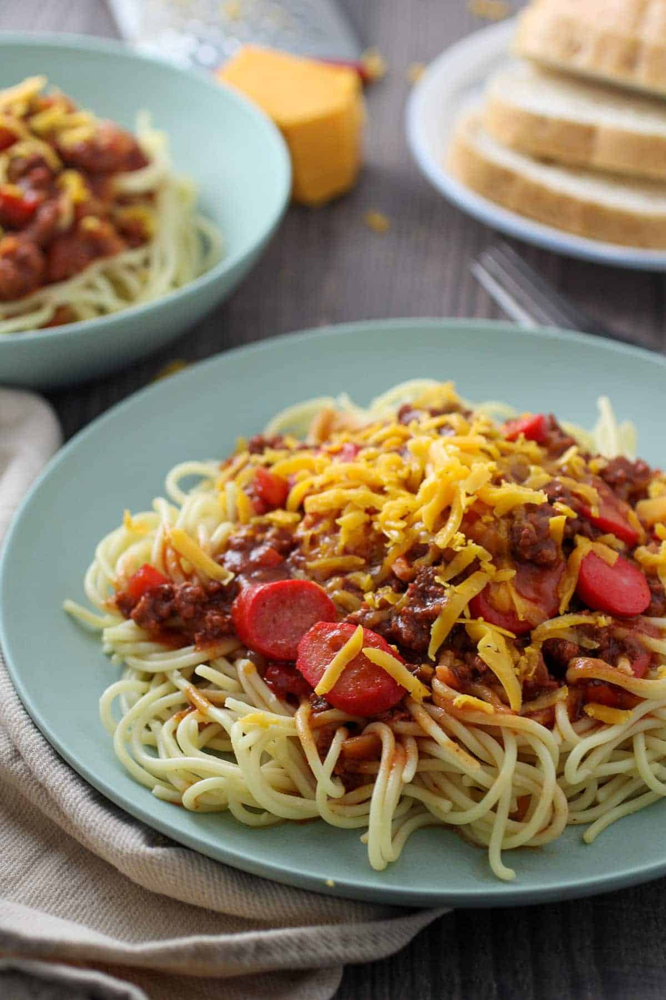

Pinoy Spaghetti Recipe

Description
Pinoy Spaghetti is the Filipino version of the ever popular pasta that is of Italian origin. This version of Spaghetti requires the use of sugar, hotdogs, and banana catsup. It might some peculiar to some but these ingredients brings up a whole new flavor that is totally Filipino.
Being loved mostly by the young ones, every kiddie party won’t be complete without this dish. Ginormous Fast Food chains such as Jollibee and Mc Donald’s even have their own Pinoy Spaghetti version (mostly included in their kid’s meal or kiddie meal). Yup, that isn’t any typographical error; In the Philippines, Mc Donald’s serves spaghetti; They called it Mc Spaghetti.
Though this dish is just a variation, Pinoy spaghetti deserves to be listed in our Filipino Food or Pinoy food list.
Try this delicious Filipino recipe : Pinoy Spaghetti.
Ingredients
- 1 lb spaghetti
- 2 tbsp Salt
- 36 ounces Water about 1 liter
Spaghetti Sauce Ingredients
- 1 cup banana ketchup
- 8 ounces tomato sauce
- 1 tsp Garlic minced
- 1 lb ground pork
- 4 hotdogs sliced
- 2 tbsp brown sugar
- 1 onion diced
- 1/4 cup cheddar cheese shredded
- 3 tbsp cooking oil
Steps
- In a large pot, pour the water in and bring to a boil.
- Put in the salt.
- Add the Spaghetti Noodles and cook until al dente (see the package for cooking time), then set aside.
- Using a separate pan, saute the garlic and onions.
- Put in the ground meat and let it cook for 5 minutes.
- Add the hotdogs and cook for 2 minutes.
- Put in the tomato sauce, banana catsup, tomato paste, and brown sugar then let it simmer for 15 to 20 minutes.
- Place the sauce on top of the cooked noodles and add some shredded cheese on top.
- Serve hot, share and enjoy!
Home Page